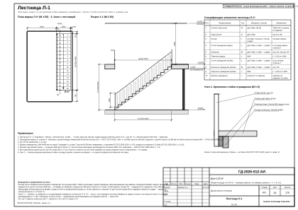

Дом 120 м² в два этажа (демо LINEA)
Листов: 175 · блокеров: 3 · замечаний: 253
01-decorator-cover.svg — Титульный лист (decorator)

02-draftsman-general.svg — Общие данные (draftsman)

03-draftsman-general-2.svg — Общие данные (draftsman)

04-draftsman-general-3.svg — Общие данные (draftsman)

05-draftsman-general-4.svg — Общие данные (draftsman)

06-draftsman-general-5.svg — Общие данные (draftsman)

07-foreman-open-issues.svg — Открытые вопросы, принятые допущения и конфликты. Лист 1 из 3 (foreman)

08-foreman-open-issues-2.svg — Открытые вопросы, принятые допущения и конфликты. Лист 2 из 3 (foreman)

09-foreman-open-issues-3.svg — Открытые вопросы, принятые допущения и конфликты. Лист 3 из 3 (foreman)

10-foreman-survey-task.svg — Задание на контрольный обмер и обследование. Лист 1 из 4 (foreman)

11-foreman-survey-task-2.svg — Задание на контрольный обмер и обследование. Лист 2 из 4 (foreman)

12-foreman-survey-task-3.svg — Задание на контрольный обмер и обследование. Лист 3 из 4 (foreman)

13-foreman-survey-task-4.svg — Задание на контрольный обмер и обследование. Лист 4 из 4 (foreman)

14-foreman-procurement.svg — График закупок и работ. Лист 1 из 3 (foreman)

15-foreman-procurement-2.svg — График закупок и работ. Лист 2 из 3 (foreman)

16-foreman-procurement-3.svg — График закупок и работ. Лист 3 из 3 (foreman)

17-architect-obmer-et1.svg — Обмерный план · 1-й этаж (architect)

18-architect-obmer-et2.svg — Обмерный план · 2-й этаж (architect)

19-architect-demolition-et1.svg — План демонтажа и монтажа перегородок · 1-й этаж (architect)

20-architect-demolition-et2.svg — План демонтажа и монтажа перегородок · 2-й этаж (architect)

21-architect-doors-et1.svg — План дверей · 1-й этаж (architect)

22-architect-doors-et2.svg — План дверей · 2-й этаж (architect)

23-architect-doors-schedule.svg — Ведомость заполнения проёмов (architect)

24-architect-stairs-л-1.svg — Лестница Л-1 (architect)

25-interior-designer-concept-et1.svg — Концепция интерьера · 1-й этаж (interior-designer)

26-interior-designer-concept-et2.svg — Концепция интерьера · 2-й этаж (interior-designer)

27-interior-designer-furniture-et1.svg — План расстановки мебели · 1-й этаж (interior-designer)

28-interior-designer-furniture-et2.svg — План расстановки мебели · 2-й этаж (interior-designer)

29-interior-designer-spec.svg — Спецификация мебели и оборудования (interior-designer)

30-interior-designer-spec-2.svg — Спецификация мебели и оборудования (продолжение) (interior-designer)

31-interior-designer-spec-3.svg — Спецификация мебели и оборудования (продолжение) (interior-designer)

32-interior-designer-spec-4.svg — Спецификация мебели и оборудования (продолжение) (interior-designer)

33-interior-designer-spec-5.svg — Спецификация мебели и оборудования (продолжение) (interior-designer)

34-electrical-engineer-sockets-et1.svg — План розеток и электровыводов · 1-й этаж (electrical-engineer)

35-electrical-engineer-sockets-et2.svg — План розеток и электровыводов · 2-й этаж (electrical-engineer)

36-electrical-engineer-lighting-et1.svg — План освещения · 1-й этаж (electrical-engineer)

37-electrical-engineer-lighting-et2.svg — План освещения · 2-й этаж (electrical-engineer)

38-electrical-engineer-switches-et1.svg — План выключателей и схема включения · 1-й этаж (electrical-engineer)

39-electrical-engineer-switches-et2.svg — План выключателей и схема включения · 2-й этаж (electrical-engineer)

40-electrical-engineer-schedule.svg — Ведомость электроточек и изделий (electrical-engineer)

41-electrical-engineer-schedule-2.svg — Ведомость электроточек и изделий (продолжение) (electrical-engineer)

42-electrical-engineer-panel.svg — Однолинейная схема щита (electrical-engineer)

43-electrical-engineer-panel-2.svg — Однолинейная схема щита (продолжение) (electrical-engineer)

44-electrical-engineer-routing-et1.svg — План принципиальных трасс · 1-й этаж (electrical-engineer)

45-electrical-engineer-routing-et2.svg — План принципиальных трасс · 2-й этаж (electrical-engineer)

46-electrical-engineer-low-current-et1.svg — План слаботочных сетей · 1-й этаж (electrical-engineer)

47-electrical-engineer-low-current-et2.svg — План слаботочных сетей · 2-й этаж (electrical-engineer)

48-hvac-engineer-ventilation-et1.svg — План вентиляции · 1-й этаж (hvac-engineer)

49-hvac-engineer-ventilation-et2.svg — План вентиляции · 2-й этаж (hvac-engineer)

50-hvac-engineer-heating-et1.svg — План отопления · 1-й этаж (hvac-engineer)

51-hvac-engineer-heating-et2.svg — План отопления · 2-й этаж (hvac-engineer)

52-plumbing-engineer-vyvody-et1.svg — План выводов сантехники · 1-й этаж (plumbing-engineer)

53-plumbing-engineer-vyvody-et2.svg — План выводов сантехники · 2-й этаж (plumbing-engineer)

54-plumbing-engineer-razvodka-et1.svg — Схема разводки водопровода и канализации · 1-й этаж (plumbing-engineer)

55-plumbing-engineer-razvodka-et2.svg — Схема разводки водопровода и канализации · 2-й этаж (plumbing-engineer)

56-plumbing-engineer-axon-v1.svg — Аксонометрическая схема В1 (холодное водоснабжение) (plumbing-engineer)

57-plumbing-engineer-axon-t3.svg — Аксонометрическая схема Т3 (горячее водоснабжение) (plumbing-engineer)

58-plumbing-engineer-axon-k1.svg — Аксонометрическая схема К1 (канализация) (plumbing-engineer)

59-plumbing-engineer-vk-walls-1.svg — Развёртки мокрых зон: выводы ВК. Гостиная-кухня (plumbing-engineer)

60-plumbing-engineer-vk-walls-4.svg — Развёртки мокрых зон: выводы ВК. Санузел гостевой (plumbing-engineer)

61-plumbing-engineer-vk-walls-13.svg — Развёртки мокрых зон: выводы ВК. Санузел второго этажа (лист 1 из 2) (plumbing-engineer)

62-plumbing-engineer-vk-walls-13-2.svg — Развёртки мокрых зон: выводы ВК. Санузел второго этажа (лист 2 из 2) (plumbing-engineer)

63-plumbing-engineer-spec-equipment.svg — Спецификация сантехнического оборудования (plumbing-engineer)

64-lighting-designer-lighting-spec.svg — Техническое задание на подбор светильников (lighting-designer)

65-lighting-designer-lighting-spec-2.svg — Техническое задание на подбор светильников (продолжение) (lighting-designer)

66-drywall-installer-ceiling-et1.svg — План потолков · 1-й этаж (drywall-installer)

67-drywall-installer-ceiling-et2.svg — План потолков · 2-й этаж (drywall-installer)

68-drywall-installer-ceiling-sections.svg — Разрезы и узлы потолков (drywall-installer)

69-drywall-installer-ceiling-sections-2.svg — Разрезы и узлы потолков (продолжение) (drywall-installer)

70-drywall-installer-ceiling-sections-3.svg — Разрезы и узлы потолков (продолжение) (drywall-installer)

71-drywall-installer-ceiling-sections-4.svg — Разрезы и узлы потолков (продолжение) (drywall-installer)

72-drywall-installer-ceiling-sections-5.svg — Сечения потолков М 1:10 (drywall-installer)

73-drywall-installer-ceiling-sections-6.svg — Сечения потолков М 1:10 (drywall-installer)

74-tiler-tile-floors.svg — Раскладка плитки. Планы полов (tiler)

75-tiler-tile-extra.svg — Раскладка плитки. Прихожая. Фартук кухни (tiler)

76-tiler-tile-walls-r4.svg — Раскладка плитки. Санузел гостевой. Развёртки стен (tiler)

77-tiler-tile-walls-r13.svg — Раскладка плитки. Санузел второго этажа. Развёртки стен (tiler)

78-finisher-floors-et1.svg — План полов · 1-й этаж (finisher)

79-finisher-floors-et2.svg — План полов · 2-й этаж (finisher)

80-finisher-finish-schedule.svg — Ведомость отделки помещений. Лист 1 из 3 (finisher)

81-finisher-finish-schedule-2.svg — Ведомость отделки помещений. Лист 2 из 3 (finisher)

82-finisher-finish-schedule-3.svg — Ведомость отделки помещений. Лист 3 из 3 (finisher)

83-colorist-color-card-et1.svg — Колерная карта · 1-й этаж (colorist)

84-colorist-color-card-et2.svg — Колерная карта · 2-й этаж (colorist)

85-colorist-color-card-2.svg — Колерная карта (colorist)

86-colorist-materials-spec.svg — Спецификация отделочных материалов (colorist)

87-colorist-materials-spec-2.svg — Спецификация отделочных материалов (colorist)

88-decorator-decor-concept.svg — Концепция декора и визуализации (decorator)

89-decorator-decor-plan-et1.svg — План текстиля и декора · 1-й этаж (decorator)

90-decorator-decor-plan-et2.svg — План текстиля и декора · 2-й этаж (decorator)

91-decorator-curtains.svg — Шторы и карнизы (decorator)

92-decorator-textile-schedule.svg — Ведомость текстиля (decorator)

93-decorator-textile-schedule-2.svg — Ведомость текстиля (продолжение) (decorator)

94-decorator-decor-schedule.svg — Ведомость декора. Схемы развески (decorator)

95-decorator-decor-schedule-2.svg — Схемы развески (продолжение) (decorator)

96-furniture-maker-furn-plan-et1.svg — Встроенная мебель. Схема расположения · 1-й этаж (furniture-maker)

97-furniture-maker-furn-plan-et2.svg — Встроенная мебель. Схема расположения · 2-й этаж (furniture-maker)

98-furniture-maker-furn-ph1.svg — Шкаф-купе Пх1 (furniture-maker)

99-furniture-maker-furn-m4.svg — Шкаф распашной М4 (furniture-maker)

100-furniture-maker-furn-dt3.svg — Шкаф распашной Дт3 (furniture-maker)

101-furniture-maker-furn-gd1.svg — Система хранения Гд1 (furniture-maker)

102-furniture-maker-furn-gd2.svg — Система хранения Гд2 (furniture-maker)

103-furniture-maker-furn-kl1.svg — Система хранения Кл1 (furniture-maker)

104-furniture-maker-furn-kl2.svg — Система хранения Кл2 (furniture-maker)

105-furniture-maker-furn-dt8.svg — Шкаф распашной Дт8 (furniture-maker)

106-furniture-maker-furn-dt10.svg — Система хранения Дт10 (furniture-maker)

107-furniture-maker-furn-kitchen-1a.svg — Кухня (пом. 1). Развёртка гарнитура (furniture-maker)

108-furniture-maker-furn-kitchen-1a-mount.svg — Кухня (пом. 1). Монтажная схема (furniture-maker)

109-furniture-maker-furn-kitchen-1b.svg — Кухня (пом. 1). Развёртка гарнитура (furniture-maker)

110-furniture-maker-furn-kitchen-1b-mount.svg — Кухня (пом. 1). Монтажная схема (furniture-maker)

111-furniture-maker-furn-mount.svg — Шкафы. Монтажная схема. Лист 1 из 2 (furniture-maker)

112-furniture-maker-furn-mount-2.svg — Шкафы. Монтажная схема. Лист 2 из 2 (furniture-maker)

113-furniture-maker-furn-schedule.svg — Ведомости изделий, техники и фурнитуры (furniture-maker)

114-draftsman-registers.svg — Реестр марок отделки и позиций альбома (draftsman)

115-draftsman-registers-2.svg — Реестр марок отделки и позиций альбома (продолжение) (draftsman)

116-draftsman-elev-key.svg — Схема расположения развёрток и узлов · 1-й этаж (draftsman)

117-draftsman-elev-key-et2.svg — Схема расположения развёрток и узлов · 2-й этаж (draftsman)

118-draftsman-elev-r1-1.svg — Развёртка стены А. Гостиная-кухня (пом. 1), кухонный фронт (draftsman)

119-draftsman-elev-r1-2.svg — Привязки электроточек и выводов ВК, стена А. Гостиная-кухня (пом. 1) (draftsman)

120-draftsman-elev-r1-3.svg — Развёртка стены А: схема и ведомость отделки. Гостиная-кухня (пом. 1) (draftsman)

121-draftsman-elev-r1-4.svg — Развёртка стены Б. Гостиная-кухня (пом. 1), кухонный фронт (draftsman)

122-draftsman-elev-r1-5.svg — Привязки электроточек, стена Б. Гостиная-кухня (пом. 1) (draftsman)

123-draftsman-elev-r1-6.svg — Развёртка стены В. Гостиная-кухня (пом. 1) (draftsman)

124-draftsman-elev-r1-7.svg — Привязки электроточек, стена В. Гостиная-кухня (пом. 1) (draftsman)

125-draftsman-elev-r1-8.svg — Развёртка стены В: схема и ведомость отделки. Гостиная-кухня (пом. 1) (draftsman)

126-draftsman-elev-r1-9.svg — Развёртка стены Г. Гостиная-кухня (пом. 1) (draftsman)

127-draftsman-elev-r2-1.svg — Развёртка стены А. Холл с лестницей (пом. 2) (draftsman)

128-draftsman-elev-r2-2.svg — Развёртка стены В. Холл с лестницей (пом. 2) (draftsman)

129-draftsman-elev-r2-3.svg — Развёртка стены Г. Холл с лестницей (пом. 2) (draftsman)

130-draftsman-elev-r3-1.svg — Развёртка стены А. Кабинет (пом. 3) (draftsman)

131-draftsman-elev-r3-2.svg — Развёртка стены Б. Кабинет (пом. 3) (draftsman)

132-draftsman-elev-r3-3.svg — Развёртка стены В. Кабинет (пом. 3) (draftsman)

133-draftsman-elev-r3-4.svg — Развёртка стены Г. Кабинет (пом. 3) (draftsman)

134-draftsman-elev-r4-1.svg — Развёртки стен А, Б. Санузел гостевой (пом. 4) (draftsman)

135-draftsman-elev-r4-2.svg — Привязки электроточек и выводов ВК, стена А. Санузел гостевой (пом. 4) (draftsman)

136-draftsman-elev-r4-3.svg — Развёртки стен В, Г. Санузел гостевой (пом. 4) (draftsman)

137-draftsman-elev-r5-1.svg — Развёртка стены А1. Прихожая (пом. 5) (draftsman)

138-draftsman-elev-r5-2.svg — Развёртка стены А2. Прихожая (пом. 5) (draftsman)

139-draftsman-elev-r5-3.svg — Развёртка стены Б. Прихожая (пом. 5) (draftsman)

140-draftsman-elev-r5-4.svg — Развёртка стены В. Прихожая (пом. 5) (draftsman)

141-draftsman-elev-r5-5.svg — Развёртка стены В: схема и ведомость отделки. Прихожая (пом. 5) (draftsman)

142-draftsman-elev-r5-6.svg — Развёртки стен Г1, Г2. Прихожая (пом. 5) (draftsman)

143-draftsman-elev-r6-1.svg — Развёртка стены А. Спальня родителей (пом. 6) (draftsman)

144-draftsman-elev-r6-2.svg — Развёртка стены Б. Спальня родителей (пом. 6) (draftsman)

145-draftsman-elev-r6-3.svg — Развёртка стены В. Спальня родителей (пом. 6) (draftsman)

146-draftsman-elev-r6-4.svg — Развёртка стены Г. Спальня родителей (пом. 6) (draftsman)

147-draftsman-elev-r6-5.svg — Привязки электроточек, стена Г. Спальня родителей (пом. 6) (draftsman)

148-draftsman-elev-r7-1.svg — Развёртка стены А. Детская (пом. 7) (draftsman)

149-draftsman-elev-r7-2.svg — Развёртка стены Б. Детская (пом. 7) (draftsman)

150-draftsman-elev-r7-3.svg — Развёртка стены В. Детская (пом. 7) (draftsman)

151-draftsman-elev-r7-4.svg — Развёртка стены Г. Детская (пом. 7) (draftsman)

152-draftsman-elev-r8-1.svg — Развёртки стен А, Б. Гардеробная (пом. 8) (draftsman)

153-draftsman-elev-r8-2.svg — Развёртки стен В, Г. Гардеробная (пом. 8) (draftsman)

154-draftsman-elev-r9.svg — Развёртки стен. Кладовая (пом. 9) (draftsman)

155-draftsman-elev-r10-1.svg — Развёртка стены А. Холл второго этажа (пом. 10) (draftsman)

156-draftsman-elev-r10-2.svg — Развёртка стены В. Холл второго этажа (пом. 10) (draftsman)

157-draftsman-elev-r10-3.svg — Развёртка стены Г. Холл второго этажа (пом. 10) (draftsman)

158-draftsman-elev-r11-1.svg — Развёртки стен А, В. Коридор второго этажа (пом. 11) (draftsman)

159-draftsman-elev-r11-2.svg — Развёртка стены Г. Коридор второго этажа (пом. 11) (draftsman)

160-draftsman-elev-r12-1.svg — Развёртка стены А. Детская вторая (пом. 12) (draftsman)

161-draftsman-elev-r12-2.svg — Развёртка стены Б. Детская вторая (пом. 12) (draftsman)

162-draftsman-elev-r12-3.svg — Развёртка стены В. Детская вторая (пом. 12) (draftsman)

163-draftsman-elev-r12-4.svg — Развёртка стены Г. Детская вторая (пом. 12) (draftsman)

164-draftsman-elev-r13-1.svg — Развёртки стен А, Б. Санузел второго этажа (пом. 13) (draftsman)

165-draftsman-elev-r13-2.svg — Привязки электроточек и выводов ВК, стена А. Санузел второго этажа (пом. 13) (draftsman)

166-draftsman-elev-r13-3.svg — Привязки электроточек и выводов ВК, стена Б. Санузел второго этажа (пом. 13) (draftsman)

167-draftsman-elev-r13-4.svg — Развёртки стен В, Г. Санузел второго этажа (пом. 13) (draftsman)

168-draftsman-nodes.svg — Узлы (draftsman)

169-estimator-boq.svg — Ведомость объёмов работ (estimator)

170-estimator-boq-2.svg — Ведомость объёмов работ (продолжение) (estimator)

171-estimator-boq-3.svg — Ведомость объёмов работ (окончание) (estimator)

172-estimator-spec.svg — Спецификация материалов (estimator)

173-estimator-spec-2.svg — Спецификация материалов (окончание) (estimator)

174-estimator-estimate.svg — Смета ориентировочная (estimator)

175-estimator-estimate-2.svg — Смета ориентировочная (окончание) (estimator)